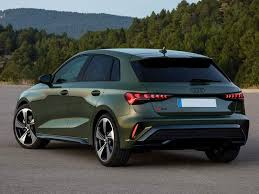
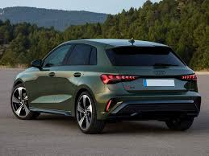
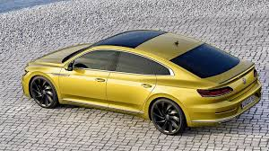
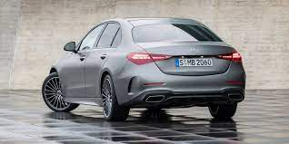
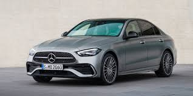

10.000-27.000$
El Audi A3 2023 es un compacto premium que combina diseño moderno, tecnología avanzada y un rendimiento eficiente. Su exterior destaca por líneas deportivas, una parrilla amplia y faros LED de última generación. En el interior ofrece un ambiente elegante con una pantalla digital de alta resolución, materiales de calidad y un diseño centrado en el confort del conductor.
 

15.000-65.000$
El Audi A7 es una berlina coupé de lujo que combina elegancia y deportividad. Destaca por su diseño aerodinámico con una silueta fastback muy característica. Ofrece un interior avanzado, con materiales premium y tecnología de última generación. Además, cuenta con motores potentes y eficientes, junto a una conducción suave y dinámica.


10.000-30.000 €
Volkswagen Golf GTI es uno de los compactos deportivos más emblemáticos del mercado. Combina un diseño moderno con detalles deportivos, como la parrilla con líneas rojas, llantas específicas GTI y un aspecto agresivo sin perder la elegancia característica del Golf. En el interior ofrece un ambiente tecnológico y dinámico, con asientos deportivos, volante multifunción y una interfaz digital que mejora la experiencia de conducción. Su motor turbo de alto rendimiento ofrece una aceleración enérgica y una respuesta precisa, manteniendo un equilibrio perfecto entre deportividad y uso diario. Con una dirección ágil y una suspensión afinada para el rendimiento, el GTI proporciona una conducción divertida y segura.


15.000-25.000$
El Volkswagen Arteon es una berlina coupé de diseño sofisticado y líneas deportivas. Ofrece un interior amplio y elegante, con gran atención al confort y la tecnología. Su conducción es estable y dinámica, ideal para viajes largos. Además, destaca por su maletero generoso y su presencia premium en carretera.
.png)
15.000-65.0000 €
El Mercedes Clase C es una berlina premium reconocida por su elegancia, confort y tecnología avanzada. Combina un diseño moderno con un interior de alta calidad, donde destacan las pantallas digitales, los asistentes de conducción y los materiales de lujo. Ofrece motores eficientes —tanto gasolina, diésel como híbridos— que proporcionan un equilibrio entre rendimiento y bajo consumo. Además, su conducción es suave y precisa, haciendo del Clase C una opción ideal para quienes buscan comodidad, estilo y prestaciones en un coche de gama alta.
 10.000-25.000$
El Mercedes Clase A destaca por un diseño moderno y deportivo, con un interior tecnológico y materiales de calidad. Ofrece una conducción ágil y cómoda, ideal tanto para ciudad como para carretera. Su sistema MBUX con inteligencia artificial y asistentes de seguridad avanzados lo convierten en uno de los compactos más completos del mercado.


Próximamente
Próximamente comenzaremos a dar más dinamismo a las páginas utilizando el lenguaje Javascript.